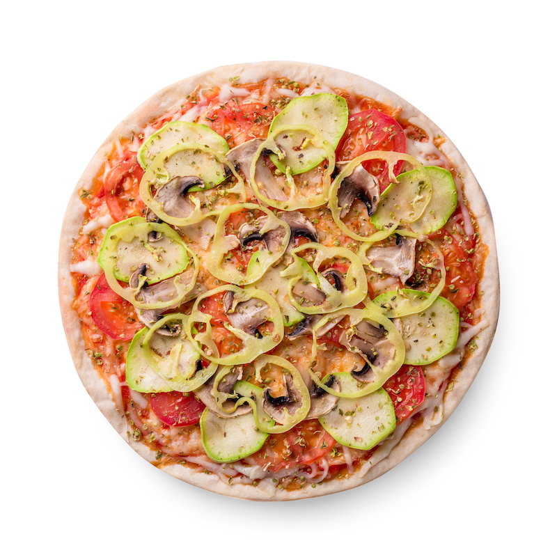

La pizza per i vegani che scommettono sul gusto
Per prima cosa sciogliete in 300 ml di acqua a temperatura ambiente il lievito di birra e lo zucchero, nei restanti 100 ml sciogliete invece il sale. Intanto in una ciotola capiente versate 200 g di farina con 150 ml di acqua e lievito e mescolate: dovrete ottenere una pastella molto densa che coprirete con un canovaccio e lascerete riposare per 20 minuti. Trascorso il tempo di posa, troverete delle bollicine in superficie: a questo punto unite il resto della farina all’acqua con il lievito e impastate per bene; una volta che l’acqua si sarà assorbita, aggiungete il resto dell’acqua con il sale e l’olio e continuate a impastare per almeno 15 minuti: l’impasto dovrà essere morbido e appiccicoso. Al termine della lievitazione disponete sulla pizza la passata di pomodoro (o una parte del condimento che avrete preparato). La pizza è ora pronta per essere infornata: vi consigliamo di cuocerla impostando la temperatura massima del forno per 15/20 minuti. Tirate poi fuori la pizza, aggiungete il resto del condimento e infornate ancora, sempre al massimo della temperatura, per altri 15 minuti.
| Valori per | 100 grammi |
|---|---|
| Calorie | 266 Kcal |
| Carboidrati | 33 gr |
| Proteine | 11 gr |
| Grassi | 10 gr |
| Sodio | 598 mg |
| Potassio | 172 mg |
| Colesterolo | 17 mg |